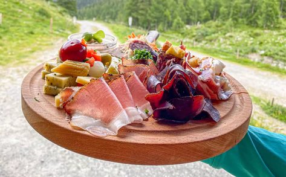
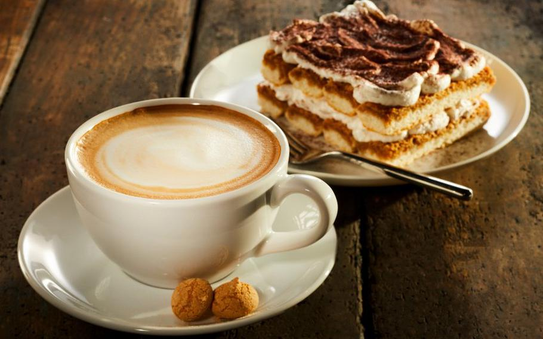

Lokale Küche

Entdecken Sie kulinarische Angebote in und um Furtwangen.

Regionale Küche
- Höhengasthaus Kolmenhof
- Gasthaus Bad
- Gasthaus Staude
Internationale Küche
- Ristorante Pizzeria Europa
- City Kebap
- Kebap Treff

Cafés & Bäckereien
- Confiserie Mayerhöfer
- Eiscafé Edelweiss
- Hexenlochmühle